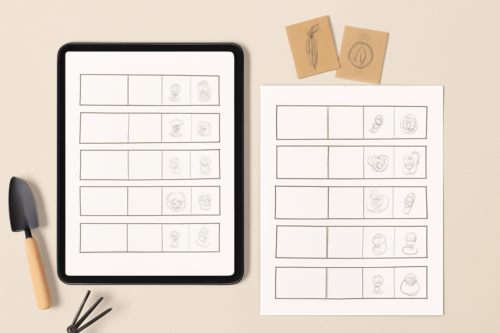

Vad du får:
- En pedagogisk, AI-genererad microkurs (PDF) – lär dig växtföljd och grundläggande odlingsplanering på enkel svenska.
- Premium, ifyllbar PDF-mall – tydlig tabell för din växtföljd med instruktioner och exempel.
- Konkreta steg-för-steg-exempel (både för grönsaker & bär!)
- Smart översikt för biodlare i liten eller medelstor skala.
Varför premium?
- AI-förbättrade mallar för extra tydlighet, anpassad för svenska trädgårdar.
- Enkelt språk & snabbt att använda – även för nybörjare.
- Går att använda digitalt eller utskrivet.
- Snygg design, lätt att återanvända år efter år.
För vem?
Trädgårdsprotokollet är för dig som:
- Odlar hemma, på odlingslott, eller i liten trädgård
- Vill börja med växtföljd – men tycker vanliga resurser är krångliga
- Vill förenkla din planering, både digitalt och på papper
- Ser värde i att minska bekymmer med skadedjur & dålig jord
- Har bin och vill matcha blomning och dragväxt med primärt odlingsschema
Hur fungerar det?
- Ladda ner PDF-paketet med microkurs och mallar.
- Läs kursen (under 30 min, enkel svenska!) och välj din växtföljdsmodell.
- Fyll i dina egna grödor i tabellen – digitalt eller för hand efter utskrift.
- Spara/protokollera år för år och förbättra din odling!
139 kr
Köp & ladda ner direkt
Du får allt som PDF i premiumkvalitet — ladda ner och kom igång inom en minut!
Vanliga frågor
- Behöver jag vara expert för att använda protokollet?
- Nej! Språket är extra enkelt, och exempel finns med för både nybörjare och dig som redan odlat några år.
- Fungerar det för både biodling och grönsaksodling?
- Ja, metoden har egna kolumner/förklaringar för att kunna anteckna bihälsa, blomning och drag samtidigt med grönsaksschema.
- Måste jag installera något?
- Nej, du får två PDF-filer direkt. De går att öppna och fylla i på dator/mobil eller skriva ut och använda för hand.
- Kan jag använda protokollet flera år?
- Ja! Mallarna är återanvändbara — spara dem digitalt, fyll på nytt för varje odlingssäsong.